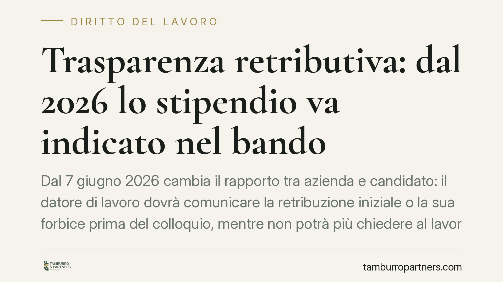

Trasparenza retributiva: dal 2026 lo stipendio va indicato nel bando
Dal 7 giugno 2026 cambia il rapporto tra azienda e candidato: il datore di lavoro dovrà comunicare la retribuzione iniziale o la sua forbice prima del colloquio, mentre non potrà più chiedere al lavoratore quanto guadagnava prima. È l'attuazione italiana della direttiva europea sulla trasparenza retributiva, che ridisegna le regole della selezione del personale.

Il fatto
Il D.Lgs. 96/2026 introduce nell'ordinamento italiano l'obbligo di trasparenza retributiva in fase di selezione. A partire dal 7 giugno 2026, le aziende dovranno indicare nell'annuncio di lavoro, o comunque comunicare prima del colloquio, la retribuzione di partenza o la fascia salariale prevista per la posizione.
La novità non riguarda solo la comunicazione attiva del salario. La norma vieta al datore di lavoro di chiedere al candidato quanto percepiva nel rapporto precedente. È un cambio di prospettiva: l'informazione sullo stipendio passa dal lavoratore all'azienda.
Inquadramento normativo
Il decreto attua la Direttiva (UE) 2023/970 sul rafforzamento del principio di parità retributiva tra uomini e donne attraverso la trasparenza. L'obiettivo dichiarato dal legislatore europeo è ridurre il divario salariale di genere, che spesso si origina proprio nella fase di negoziazione iniziale.
La logica è chiara. Quando il salario viene calcolato partendo dalla retribuzione precedente del candidato, eventuali disparità storiche si trasferiscono nel nuovo rapporto e si consolidano nel tempo. Imponendo all'azienda di fissare e dichiarare in anticipo la fascia retributiva, la norma sposta il riferimento sul valore della posizione, non sul passato della persona.
Il D.Lgs. 96/2026 si inserisce in un quadro più ampio di obblighi informativi a carico del datore. Si affianca, ad esempio, agli obblighi di trasparenza sulle condizioni di lavoro già previsti dalla normativa vigente (D.Lgs. 104/2022, cosiddetto decreto trasparenza). La direzione è univoca: ridurre le asimmetrie informative tra chi assume e chi cerca lavoro.
Implicazioni pratiche
Per le aziende, il primo impatto è organizzativo. Pubblicare un annuncio con la fascia salariale significa aver già definito, a monte, il valore economico della posizione e la coerenza interna con gli altri inquadramenti. Diventa difficile sostenere differenze retributive non giustificate da criteri oggettivi.
Il divieto di chiedere lo stipendio precedente incide sulla prassi dei colloqui. Domande oggi diffuse — quanto guadagnavi, quanto ti aspetti sulla base del tuo storico — diventano illegittime. Le funzioni HR e i selezionatori esterni dovranno rivedere format dei colloqui, modulistica e griglie di valutazione.
Per i candidati il cambiamento è sostanziale. Si arriva al confronto con un dato di partenza noto e con una posizione negoziale più equilibrata. Chi proviene da un contratto sottopagato non porta con sé quel limite nella trattativa.
Va segnalato un profilo di rischio per i datori. La trasparenza retributiva rende più facile, per il lavoratore, individuare disparità ingiustificate e attivare le tutele previste in materia di parità di trattamento. Le aziende che non avranno una struttura salariale coerente e documentabile saranno più esposte a contestazioni.
Cosa fare in concreto
- Mappate gli inquadramenti. Verificate la coerenza interna delle retribuzioni per ruoli equivalenti e correggete eventuali disparità prive di giustificazione oggettiva prima dell'entrata in vigore.
- Definite le fasce salariali per posizione. Stabilite, per ciascuna figura ricercata, una forbice retributiva basata su criteri documentabili (responsabilità, esperienza, mercato).
- Aggiornate annunci e modulistica. Inserite l'indicazione retributiva nei format degli annunci e rimuovete dai questionari ogni richiesta sullo stipendio precedente del candidato.
- Formate selezionatori e HR. Istruite chi conduce i colloqui sulle domande non più ammesse e sulle modalità corrette di gestione della fase negoziale.
- Conservate le motivazioni. Tenete traccia scritta dei criteri che giustificano le differenze retributive: in caso di contestazione, l'onere di dimostrarne la legittimità ricade sul datore.
Consigliamo alle imprese di non attendere la scadenza del 7 giugno 2026 per adeguarsi. La revisione della struttura salariale richiede tempo e, soprattutto, va affrontata prima che eventuali disparità diventino oggetto di rilievo.
La trasparenza retributiva non è un adempimento formale. È un intervento che tocca la politica salariale dell'azienda e la sua esposizione al contenzioso in materia di parità di trattamento.
---
*Contributo informativo a cura di Tamburro & Partners - Avv. Giuseppe Tamburro. Non costituisce parere legale.*
Ogni storia di lavoro ha i suoi tempi.
Se gestisci HR e vuoi un confronto su contenzioso, ispezioni o licenziamenti, scrivi allo studio. Ti rispondiamo entro un giorno lavorativo.